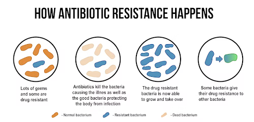
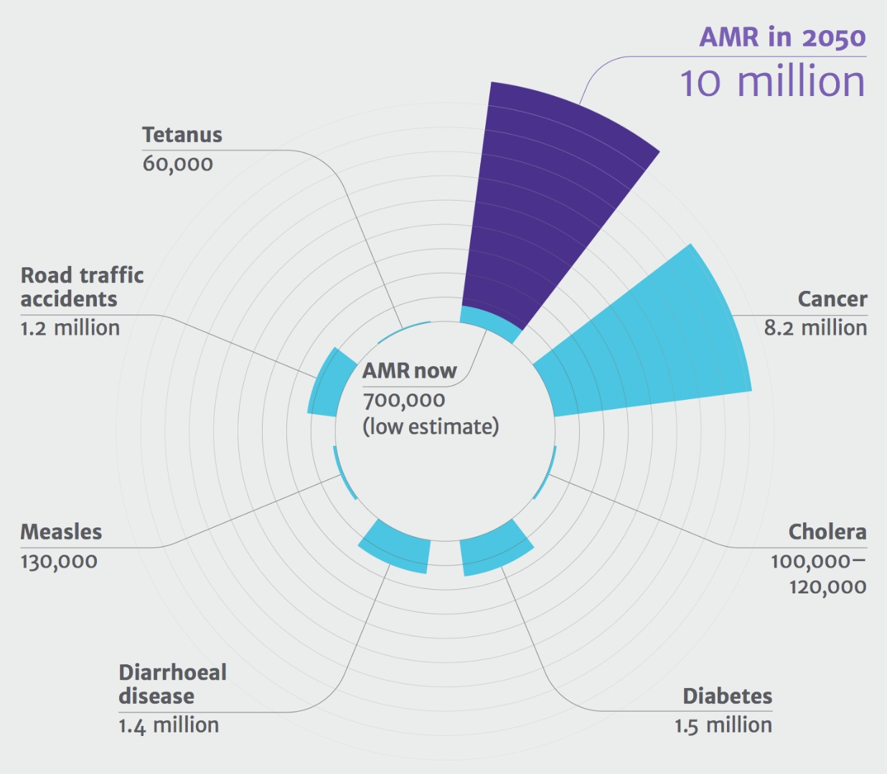
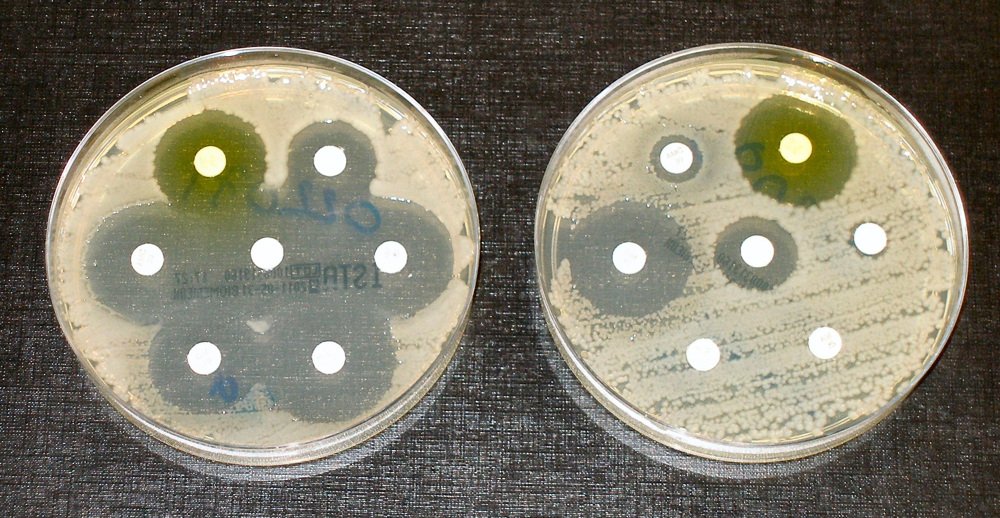

The Effect of Different Wavelengths of Light on Ampicillin Susceptibility in Escherichia coli
Sophmore Research Project

Background
Visible and UV light are a major cause of stress in bacteria populations.
A study showed that short-wavelength visible and UV light between 250 and 488 nm causes the viable cell density of E. coli.
UV resistance in E. coli is correlated with resistance to other abiotic stresses.
The results suggested that the variation in UV resistance in a bacteria population is maintained because it causes resistance to other abiotic factors.
Mutations that increase fitness of E. coli in a specific antibiotic-free growth medium can also increase antibiotic resistance through pleiotropy.
The study implies that various growth conditions increase genetic variation in resistance mutations that natural selection can act on after antibiotic exposure.
Rationale
Antibiotic resistance is a growing global health problem.
Over 2.8 million infections and 35,000 deaths in the US.
Infections limit treatment options and lead to more expensive medical costs, longer hospital stays, and
increased mortality.
It is important to understand how environmental factors, like exposure to different wavelengths of light,
contribute to the development of antibiotic resistance to effectively combat it.
The findings of the study may inform the utilization of UV light as a disinfectant to decrease
antibiotic-resistant populations.


Experimental Design
Research Question: How does natural selection from prolonged exposure to different wavelengths
of light affect antibiotic resistance in a population of E. coli K-12?
Objective: To investigate how the evolution of UV resistance affects antibiotic susceptibility.
Independent variable: The wavelength of light that the E. coli population was exposed to.
No light (control)
UV light (390 - 400 nm)
Visible light (400 - 700 nm)
Dependent variable: The diameter of the zone of inhibition in centimeters.
Hypothesis: One reason that ampicillin susceptibility in E. coli varies is that environmental
factors like the exposure to UV light (390 - 400 nm) increases genetic variation of antibiotic-resistant
genes that natural selection can act on, decreasing ampicillin susceptibility.
Prediction: Exposure to UV light (390 - 400 nm) will result in a significantly smaller
diameter zone of inhibition in an E. coli population, while exposure to visible light (400 - 700 nm) will
result in no significant difference in the diameter of the zone of inhibition.